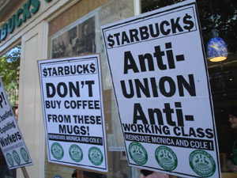

Submitted on Fri, 05/01/2009 - 11:33pm

17-count Charge Latest in a String of Setbacks for Brand
Minneapolis -- The Starbucks Workers Union announced today that the National Labor Relations Board has found merit with 17 counts of labor rights violations at Starbucks in Minneapolis/St. Paul. The fresh charges come on the heels of a "guilty" verdict in New York Federal Court on nearly 30 similar charges last December. Once seen as a paragon of social responsibility and entrepreneurial innovation, the coffee giant's image has recently been tarnished with mounting evidence of rampant labor violations, on top of sliding profits, increased market competition, and declining consumer demand.
Mall of America Starbucks barista Erik Forman commented, "Since the recession began, Starbucks has been slashing benefits, laying off workers, reducing hours, and increasing the workload on Baristas in a quixotic effort to maintain boom-era profitability. As our standard of living comes under attack, the need for a union has never been greater. Starbucks must respect our right to association."
Submitted on Wed, 01/14/2009 - 9:37pm
 Media Statement delivered January 7: Faced with the prospect of losing
another trial in front of the National Labor Relations Board the
Regional Director has agreed to let Starbucks settle the charges
against them and forego the trial that was to begin today. The union is
upset that the Board is agreeing to accept another Starbucks settlement
in Grand Rapids instead of holding them accountable in open court. If
this most recent settlement is approved it will be 3rd one allowed by
the board in Grand Rapids. With the signing of each settlement
Starbucks has said they would end their anti-union intimidation and
each time it has continued unabated. We can be sure it will continue
which is why union membership is so vital.
Media Statement delivered January 7: Faced with the prospect of losing
another trial in front of the National Labor Relations Board the
Regional Director has agreed to let Starbucks settle the charges
against them and forego the trial that was to begin today. The union is
upset that the Board is agreeing to accept another Starbucks settlement
in Grand Rapids instead of holding them accountable in open court. If
this most recent settlement is approved it will be 3rd one allowed by
the board in Grand Rapids. With the signing of each settlement
Starbucks has said they would end their anti-union intimidation and
each time it has continued unabated. We can be sure it will continue
which is why union membership is so vital.
Had the trial gone on here today in Grand Rapids we would have detailed
the same type of union busting activity that Starbucks was found guilty
of a couple weeks ago in New York. Internal communications would have
been admitted into evidence showing upper management discussions about
union organizing in Grand Rapids and speculation about barista's union
sympathies. The same type of surveillance and monitoring that was going
on in New York. Also, Starbucks selectively enforced the attendance
policy, scheduled baristas based on their union sympathies, and gave me
less in raises because of my union affiliation. Based on the evidence
that would have been presented its unbelievable that Howard Schultz
doesn't have knowledge of the huge anti-union operation in place at
Starbucks. Its possible hes directing the whole operation.
On July 5th of last year there was a Global Day of Action against
Starbucks called by the Grand Rapids Starbucks Workers Union and the
Seville (Spain) CNT. The Day of Action was called after Monica was
fired from a Starbucks in Seville and I was fired here in Grand Rapids.
Over 200 Starbucks were picketed in over 80 cities in 20 countries. We
have a message from the CNT with an update of Monica's situation.
Submitted on Wed, 01/14/2009 - 9:32pm
Disclaimer - The opinions of the author do not necessarily match those of the IWW. This article is reposted in accordance to Fair Use guidelines.
 By Paul Demko - The Minnesota Indepedent, January 9, 2009
By Paul Demko - The Minnesota Indepedent, January 9, 2009
About a dozen former and current Starbucks workers gathered outside
the coffee chain’s outlet at the intersection of Nicollet and Franklin
avenues on Thursday morning, circling on the sidewalk in the
single-digit temperatures and carrying placards that read “Justice for
Baristas” and “Starbucks Workers Union.”
“Starbucks Union here to stay,” they chanted. “These lattes are union-made.”
The event coincided with the filing of 11 labor violation charges
against the company with the National Labor Relations Board (NLRB).
Among the accusations against the ubiquitous coffee retailer: Employees
were illegally fired or punished for engaging in union activities;
store managers wrongly prohibited discussions of organizing efforts at
work; and pro-union workers were spied on by management.
“Starbucks has flagrantly violated the National Labor Relations Act
on countless occasions,” said Aaron Kocher, an employee at the Nicollet
Avenue shop.
Submitted on Wed, 01/14/2009 - 9:22pm
By Michael Cavlan - from Opednews.com, January 12, 2009.
On
January 8, 2009, there was a Press Conference in the Minnesota Capitol
in St Paul, organized by a coalition of "Trade Union" and so called
"progressive" groups.
The organization included
TakeAction Minnesota, AFSCME Council 5, Children's Defense Fund
Minnesota, Education Minnesota, ISAIAH, Minnesota Nurses Association,
SEIU Minnesota State Council, The AFL-CIO.
The Press Conference was organized to trumpet "coalition representing
350,000 Minnesotans will launch its "Make Health Happen" campaign to
reform the state's health care system, which now leaves hundreds of
thousands of state residents without health coverage and many thousands
more underinsured."
These group of self described "progressives" support the "Minnesota
Health Security Act" to be Introduced The group will also unveil the
"Minnesota Health Security Act" (MHSA) which charts a clear path to
guaranteed affordable health coverage for all Minnesotans, starting
with children. It will be introduced in both the House and Senate. The
bill is based on the Children's health Security Act, which successfully
passed the state House in 2007. The bill's authors, Representative Paul
Thissen and Senator Tony Lourey, will participate in the event.
Submitted on Wed, 12/24/2008 - 4:06am
FOR IMMEDIATE RELEASE
Contact: Erik Forman, 608 695 8705
Starbucks Workers Union/IWW
December 23, 2008
Twin Cities Starbucks Baristas to Spill the Beans in New Blog - Starbucks Workers Union Invites Public to 'Look Behind the
Brand
Minneapolis, MN-- the Starbucks Workers Union announced today that Twin Cities Baristas have launched a new blog to document their struggle against poverty wages, inconsistent scheduling, and job insecurity at the world's largest coffee chain.
Union Barista Aaron Kocher said, "This is the blog that Howard Schultz doesn't want you to read. As Starbucks' overpaid executives gut the company to feed greedy investors, we will bring the truth behind the brand into the public eye."
The blog, accessible at
http://tcsbuxunion.com, will provide an inside look at working conditions at Starbucks, keeping the public abreast of Starbucks' vicious attempts to thwart worker unionization amidst deteriorating working conditions.